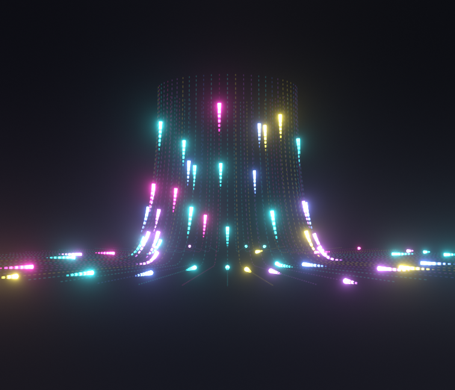
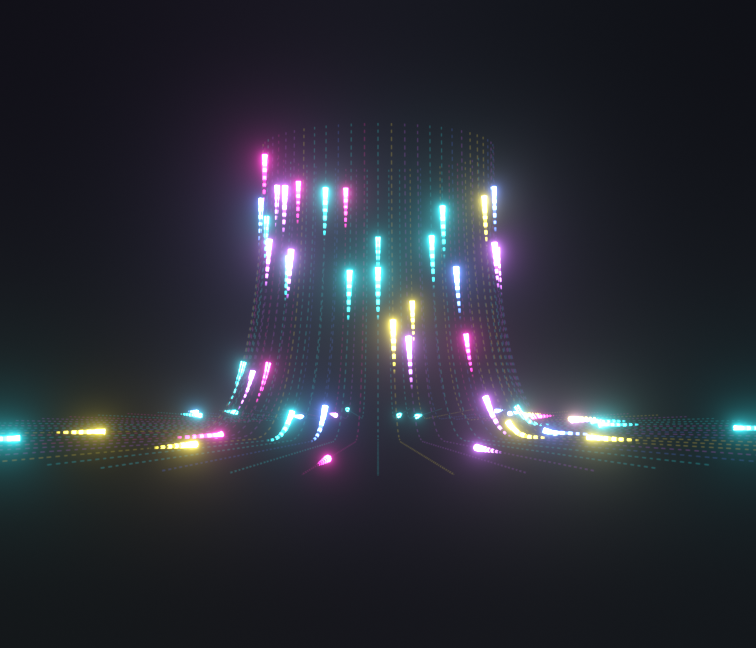
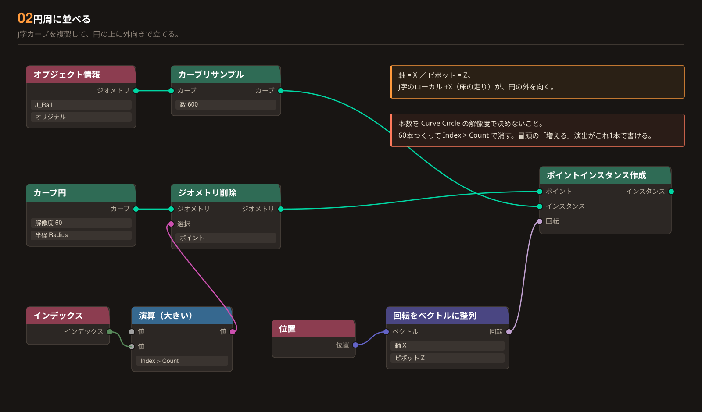
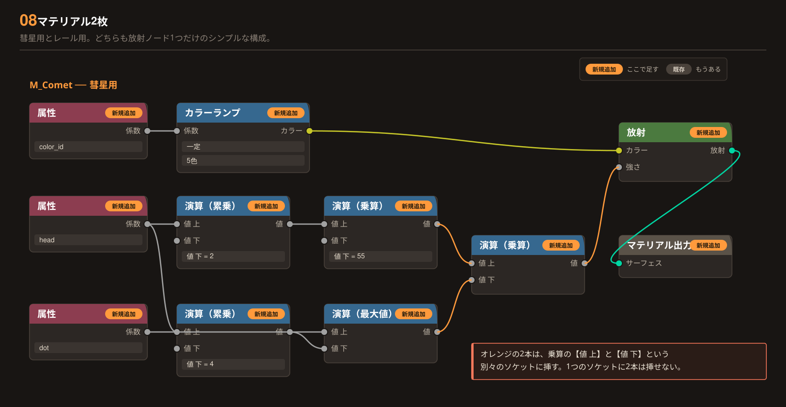
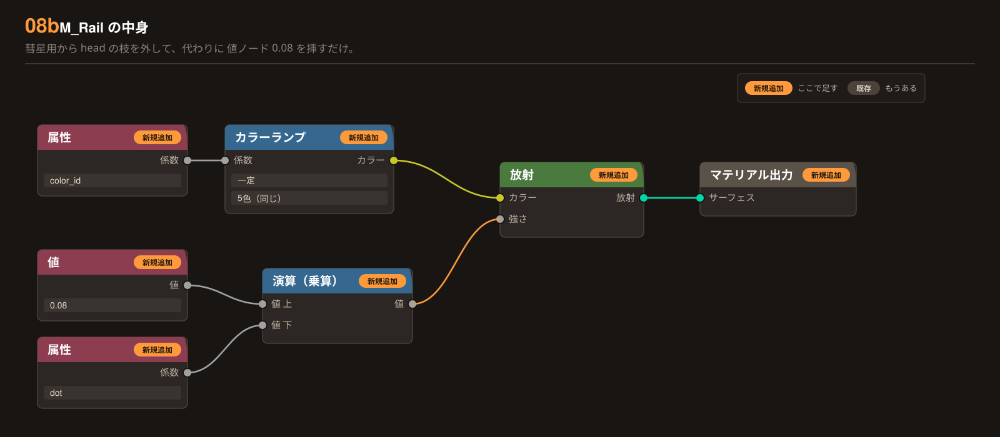
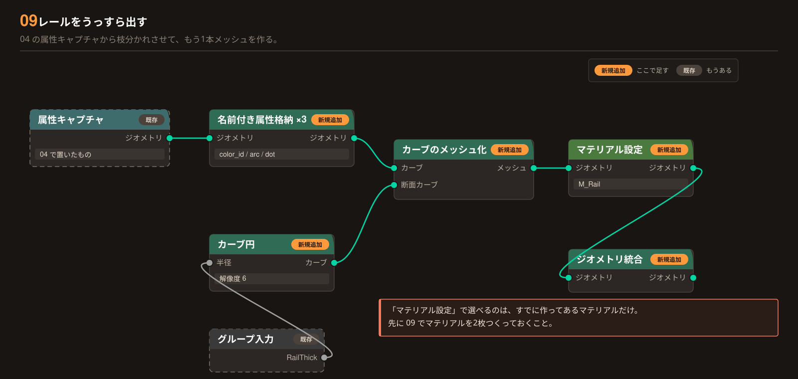

Blender 5.2 LTS / Geometry Nodes / EEVEE
光を下から
駆け上げる。
円周に並べた J 字のレールを、色とりどりの光が下から上へ走り抜けます。キーフレームは1つも打ちません。フレーム番号から「いまどこを走っているか」を直接計算するので、尺を変えても速度を変えても壊れません。
ノード名は 日本語UI の表記で書いてあります（英語名は 小さい灰色 で併記）。
各ステップのノードには 新規（ここで足す）と 既存（もう置いてある）を付けてあります。図の中のノードにも同じバッジが付いています。
3D VIEW の行は「ここまでで画面がどうなっているか」です。合っていなければ、そのステップを見直してください。
日本語UI ↔ 英語 のノード名 早見表
| オブジェクト情報 | Object Info | カーブリサンプル | Resample Curve |
| カーブ円 | Curve Circle | ジオメトリ削除 | Delete Geometry |
| ポイントインスタンス作成 | Instance on Points | 回転をベクトルに整列 | Align Rotation to Vector |
| 属性キャプチャ | Capture Attribute | インスタンス実体化 | Realize Instances |
| スプラインパラメーター | Spline Parameter | カーブトリム | Trim Curve |
| 名前付き属性格納 | Store Named Attribute | 範囲マッピング | Map Range |
| カーブのメッシュ化 | Curve to Mesh | マテリアル設定 | Set Material |
| ジオメトリ統合 | Join Geometry | シーンタイム | Scene Time |
| ランダム値 | Random Value | 演算 | Math |
| 演算 ＞ 乗算 | Multiply | 演算 ＞ 加算 | Add |
| 演算 ＞ 減算 | Subtract | 演算 ＞ 小数部 | Fraction（Fract ではない） |
| 演算 ＞ 大きい | Greater Than | 演算 ＞ 累乗 | Power |
| 演算 ＞ 最大値 | Maximum | カラーランプ | Color Ramp |
| 放射 | Emission | 属性（マテリアル側） | Attribute |
Result / 到達点
できあがり
UP_roll_light_04.blend の絵です。1本ごとに色・速度・スタート位置がバラバラで、下から上へ何度でもループします。



J 字のレールを手で描く
ノードではなく、ふつうのカーブオブジェクトを1本置きます。ベジエ3点。床を走って、裾で立ち上がって、まっすぐ上へ抜ける形です。
追加 → カーブ → ベジエ ／ 名前は J_Rail
- A 床の外端（光のスタート）
- 9, 0, 0
- B 曲がりはじめ（裾の張り出し）
- 1.8, 0, 0
- C 上端（光のゴール）
- 0, 0, 8
- A・B のハンドル
- 水平に揃える
- C のハンドル（下向き）
- Z −3.2
- Cyclic（閉じる）
- OFF
J 字のカーブが1本、横から見て見えていればOK。この時点ではまだ1本だけです。
Radius）の上に、ちょうど乗るようにするためです。
ずれるとどうなる？
Speed をマイナスにしないと上へ行かず、しかも尻尾から先に上がるという変な動きになります。
向きの確かめ方と、逆だったときの直し方
N）の「アイテム」に出る番号が 0 番なら正しい向きです。もっと確実なのは、オーバーレイの カーブ → ノーマル を ON。矢印が床から上へ向いていればOK。
直し方：編集モードで
A（全選択）→ メニューの セグメント → 方向を反転（英語UI：Curve → Segments → Switch Direction）。ノードで直すなら、02 のカーブリサンプルの後ろに カーブ反転（
Reverse Curve）を1つ挟んでも同じです。

円周に並べる
空のメッシュを1つ置いて、ジオメトリノードのモディファイアを付けます。そこに J_Rail を呼び込んで、円の上に外向きで並べます。このステップで足すノードは9個です。
3.3 m は入力欄に 330 と打つことになります。
なぜこうなるのか
シーンプロパティ → 単位 → 長さ を見てください。「センチメートル」なら、この手順書の数値を100倍して打つか、「メートル」に変えてください。
舞台の実寸データを読み込んだファイルだとセンチ設定になっていることがよくあります。半径 3.3 と打って何も見えないのは、たいていこれです（3.3cm の円になっている）。
ジオメトリノードは J_Rail に付けるのではありません。新しい空のオブジェクトを1つ作って、そちらに付けます。
- ① 追加 → メッシュ → 平面
- 原点に置く
- ② 名前を変える
- RollLight
- ③ 編集モードで頂点を全部削除
- 中身は空でOK
- ④ RollLight にモディファイア
- ジオメトリノード → 新規
J_Rail に付けるとこのエラーが出ます
モディファイヤーオブジェクトからジオメトリを取得できません（英語UI：
Could not get geometry from modifier object）オブジェクト情報ノードが指している J_Rail と、モディファイアが乗っている J_Rail が同じオブジェクトだからです。自分の結果を自分の材料にしようとして、Blender が計算を止めます。グループ出力に繋いだ瞬間に消えるのはこれが原因です。
すでに J_Rail に付けてしまった場合は、モディファイアを削除して、上の手順で作り直した RollLight に付け直してください。
グループ入力はあとで使うパラメータの入口なので、いまは何も繋がっていなくて正常です。グループ出力に繋いだものだけが3Dビューに出ます。
① レールを読み込む
② 並べる土台の円をつくる
③ 外向きに立てる
④ 合流させて出力へ
- オブジェクト情報 / オブジェクト
- J_Rail
- オブジェクト情報 / 空間
- オリジナル
- カーブリサンプル / 数
- 600
- カーブ円 / 解像度
- 60
- カーブ円 / 半径
- 3.3
- ジオメトリ削除 / ドメイン
- ポイント
- 回転をベクトルに整列 / 軸
- X
- 回転をベクトルに整列 / ピボット
- Z
つなぐ先
- カーブリサンプル の カーブ →
- ポイントインスタンス作成 の インスタンス
- ジオメトリ削除 の ジオメトリ →
- ポイントインスタンス作成 の ポイント
- 回転をベクトルに整列 の 回転 →
- ポイントインスタンス作成 の 回転
- ポイントインスタンス作成 の インスタンス →
- グループ出力 の ジオメトリ
いま ポイントインスタンス作成 の「インスタンス」を グループ出力 の「ジオメトリ」へ。
J 字のレールが円を描いて60本立ち、下が外へ広がったスカート状になります。色は付いていない灰色のカーブのままでOK。
何も出ない／消えるときは、上の★（モディファイアを付ける先）を確認してください。
「Index > Count」はどこに書くのか
Count はまだ作っていないので、いまは下の値に
60 と直接打っておいても構いません（拡張編でパラメータ化します）。なぜ遠回りするのか
600 の根拠

1本に1つの値を配る
「このレールは何色か」「どれくらい速いか」「どこからスタートするか」を、レール1本につき1つずつ決めます。この手順書で一番大事な設計判断です。
置き場所：ポイントインスタンス作成 の すぐ後ろ
- 属性キャプチャ / ドメイン
- インスタンス
- 項目1 ／ 名前 t_offset
- ランダム値 0.0 〜 1.0 ／ シード 11
- 項目2 ／ 名前 speed_mul
- ランダム値 0.8 〜 1.2 ／ シード 22
- 項目3 ／ 名前 color_id
- ランダム値 0.0 〜 1.0 ／ シード 33
属性キャプチャ の「ジオメトリ」を グループ出力 へ繋ぎ替える。
（ポイントインスタンス作成から直接繋いでいた線は、これで自動的に外れます）
見た目は 02 のまま変わりません。値を用意しただけで、まだ何にも使っていないからです。ここは「変わらないのが正解」です。
インスタンス にしてください。初期値の ポイント のままだと、1本のレールの中で色が虹色にバラけます。
なぜ「ポイント」だとバラけるのか
インスタンス・ドメインなら、まだ「60本」だった時点で値が決まるので、1本につき1つの値が保証されます。
捕まえた値はこのあと実体化とトリムを通り抜けて、最後まで届きます。

レール上の位置を先に覚えておく
実体化してから、「レールの根元から何メートルの地点か」を全部の点に覚えさせます。07 の点線をレールに貼り付けるための仕込みです。やる順番が全てです。
- 2つ目の属性キャプチャ / ドメイン
- ポイント
- 項目 ／ 名前
- arc
- スプラインパラメーターのどの出力か
- 長さ（メートル）
- カーブトリム / モード
- 係数（Factor）
ノードの上で ＋ボタン（項目リストの右）を押すと
Value という項目が1つ増えます。その項目名をダブルクリックすると書き換えられます。ここを
arc にしてください。リストが見えないときは
N キーでサイドバーを開き、アイテム → ノード を見てください。
名前を間違えるとどうなる？
カーブトリム の「カーブ」を グループ出力 へ繋ぎ替える。
レールが短い線の集まりに切り詰められます。カーブトリムを入れた瞬間、レールの一部しか残らなくなるのが正解です（まだ動きません）。
なぜ滑るのか
トリムの前に「レールの根元から何メートルか」を覚えておけば、トリムはその値を引き継ぐだけなので、点線はレールに貼り付いたまま動きません。

光を走らせる
ここで動きます。フレーム番号から「いま頭がどこか」を計算して、レールのその区間だけを切り取ります。キーフレームは打ちません。演算ノードを5個つなぎます。
- シーンタイムのどの出力か
- フレーム
- 演算① 乗算 ／ 値 下
- 0.010（Speed）
- 演算② 乗算 ／ 値 下
- 03 の speed_mul
- 演算③ 加算 ／ 値 下
- 03 の t_offset
- 演算④
- 小数部（Fraction）
- 演算⑤ 減算 ／ 値 上
- 小数部の出力
- 演算⑤ 減算 ／ 値 下
- 0.09（Tail）
- カーブトリム / 開始
- 減算の出力
- カーブトリム / 終了
- 小数部の出力
Fraction。Fract という項目はありません。演算ノードのドロップダウンの中ほどにあります。| 乗算・加算・最大値 | 上下どちらでも同じ結果。気にしなくてOK | ||
| 減算・累乗・大きい | 順番に意味がある。必ず 値 上 ＝ 引かれる側／底／比べる値 | ||
グループ出力は 04 のまま（カーブトリム）。繋ぎ替えは不要です。
再生（スペースキー）すると、短い光の区間が下から上へ流れます。1本ごとにタイミングと速さがバラバラなら成功。まだ細さも点線も色もありません。
Speed をマイナスにしないと上へ行かないときは、01 のカーブの向きが逆です。
マイナスにすれば上へは行きますが、頭と尻尾が入れ替わって尻尾から上がってしまいます（トリムの「終了」側が頭なので）。
符号でごまかさず、01 でカーブの向きを反転してください。
頭を太く、尾を細く
切り取った区間を筒にします。このとき頭から尾に向かって細くすると、一気に「光の玉が走っている」ように見えます。
- 名前付き属性格納 / 名前
- head
- 名前付き属性格納 / 型・ドメイン
- Float / ポイント
- 範囲マッピング / 最小から・最大から
- 0 ／ 1
- 範囲マッピング / 最小へ・最大へ
- 0.25 ／ 1.0
- カーブ円（2つ目）/ 解像度
- 8
- カーブ円（2つ目）/ 半径
- 0.07（Thickness）
color_id も読むからです。カーブトリム → head → color_id → arc → カーブのメッシュ化
- 1つ目 / 名前
- head ← スプラインパラメーターの 係数
- 2つ目 / 名前
- color_id ← 03 の属性キャプチャの color_id 出力
- 3つ目 / 名前
- arc ← 04 の属性キャプチャの arc 出力
なぜ色の値をここでも格納するのか
09 のレール側でも同じ3つ（＋dot）を格納します。枝が分かれているので、両方に必要です。
カーブのメッシュ化 の「メッシュ」を グループ出力 へ繋ぎ替える。
光が「筒」になり、頭が太く尾が細いしずく型になります。ここで一気に彗星らしくなります。色はまだ灰色です。
スケール 入力で。5.x は Set Curve Radius の半径属性を暗黙には見てくれません。太さが変わらないときはここです。
点線にする
ベタ塗りの光ではなく、LEDテープのような粒々にします。04 で覚えておいた arc をここで使います。
arc というノードはありません。04 で置いた属性キャプチャの「arc」出力ソケットから線を引いてくる、という意味です。既存- 演算（乗算）/ 値 上
- 属性キャプチャの arc
- 演算（乗算）/ 値 下
- 5.0（DotDensity）を直接打つ
- 演算（大きい）/ 値 下
- 0.5 を直接打つ
- 名前付き属性格納 / 名前
- dot
- 名前付き属性格納 / 型・ドメイン
- Float / ポイント
- 置く場所
- 06 の鎖のいちばん後ろ
カーブトリム → head → color_id → arc → dot → カーブのメッシュ化06 で
arc → カーブのメッシュ化 に繋いでいた線を、dot を間に挟んで繋ぎ直します。DotDensity というのはこの数値につけた呼び名で、拡張編でグループ入力に出してスライダーにすると、その名前で表示されます。いまは直接打って構いません。
グループ出力は 06 のまま（カーブのメッシュ化）。繋ぎ替えは不要です。
この時点ではまだ見た目は変わりません。点線の値を作って格納しただけで、使うのは 08 のマテリアルです。ここも「変わらないのが正解」。
DotDensity の単位は「1メートルあたりの本数」です。周期 = 1 ÷ 数値。5 なら 20cm おき。
大きい数字を入れると壊れます
arc はスプラインパラメーターの 長さ、つまりメートルの値です。0〜1 の割合ではありません。ここに 140 のような数字を入れると周期が 7mm になり、02 のリサンプルの点間隔（2.8cm）より細かくなって、点線ではなく干渉縞（モアレ）が出ます。実用上の上限は 12 くらいです。

マテリアルを2枚つくる
彗星用とレール用。どちらも「放射」ノード1つだけのシンプルな構成です。09 の「マテリアル設定」で選べるのは、ここで作っておいたマテリアルだけなので、先にこちらをやります。
マテリアルプロパティ → 新規 → 名前を M_Comet ／ もう1枚 M_Rail
初期状態の「プリンシプルBSDF」は消して、代わりに「放射」を置いてください。
M_Comet ／ 色の線
M_Comet ／ 明るさの線
- 属性ノード / 型
- ジオメトリ（初期値のまま）
- カラーランプ / 補間
- 一定（Constant）
- カラーランプ / 色
- マゼンタ・シアン・イエロー・青・紫
- 累乗①（head の）/ 値 下
- 2
- 乗算（head の）/ 値 下
- 55
- 累乗②（head の）/ 値 下
- 4
- 最後の乗算 →
- 放射の 強さ
値 上 ← 乗算（×55）の出力／値 下 ← 最大値の出力。別々のソケットです。
属性ノードは3つ？ 4つ？
color_id / head / dot の3つです。head の属性ノードは1つでよく、その出力から2本に枝分かれさせて累乗①と累乗②の両方に挿します。出力から2本出すのはOK（入力に2本挿すのがNG）。一定。リニアのままだと色が混ざって「1本1色」になりません。これが無いとどうなるか

M_Rail ／ head を使わないだけ
- 色の線
- M_Comet とまったく同じ（color_id → カラーランプ）
- 値ノード
- 0.08
- 使わないもの
- head の枝は丸ごと不要
Shift+D）して作るのが早いです。マテリアルプロパティの複製ボタンで M_Comet をコピーし、名前を M_Rail に変えて、head の枝（累乗・乗算・最大値）を消して「値 0.08」に差し替えます。
レールをうっすら出す
光が走る「道」も、かすかに見えているほうがそれらしくなります。トリムしていない全長を、細く暗くもう1本描いて合流させます。
04 の属性キャプチャ（2つ目）から枝分かれさせる
- 格納する属性（3つ）
- color_id / arc / dot
- カーブ円（3つ目）/ 解像度
- 6
- カーブ円（3つ目）/ 半径
- 0.016（RailThick）
- マテリアル設定（彗星側）
- M_Comet
- マテリアル設定（レール側）
- M_Rail
ジオメトリ統合 の「ジオメトリ」を グループ出力 へ繋ぎ替える。これが最終形です。
色が付き、走る光と、その下のうっすらしたレールの両方が見えます。ほぼ完成形。あとは 10 で光らせるだけです。


光らせる（ここで9割つまずきます）
ノードは完成しているのに「光らない」「色が眠い」となる場所です。ノードではなくレンダー設定の話です。
- コンポジティング → グレア / タイプ
- ブルーム
- グレア / 品質
- 高
- グレア / しきい値
- 1.0
- グレア / 強さ・サイズ
- 1.0 ／ 6.0
- カラーマネジメント → ビュー変換
- 標準（Standard）
- ワールドの背景
- 黒（強さ 0）
- 出力解像度
- 1512 × 1296
光がにじんで、背景が真っ黒になります。ビューポートで見るには、3Dビュー右上のビューポートコンポジティングを ON。
Filmic のままだと、絶対にあの見た目になりません。標準 に変えてください。見た目の差で一番効く設定です。
Filmic だと何が起きるか
Extra / 拡張編
ワイプをつける
「冒頭で一気に増えて、最後は中央に寄って一本の柱になり、そのまま上へ抜ける」——これを後から足せるように、02 で下ごしらえしてあります。ノードは1つも足しません。
数値2つにキーを打つだけ
モディファイアのパネルに出ている Count と Radius に、普通のプロパティと同じように I キーでキーフレームが打てます。
- 冒頭「一気に増える」
- Count を 0 → 60
- 最後「中央に寄って柱になる」
- Radius を 3.3 → 0
- そのまま上へ抜ける
- Speed を上げる／カメラを上へ
J 字を手描きせずに作る
形を数値で管理したくなったとき用。01 の手描きカーブを、ノードだけで置き換えられます。
ただし最初は手描きのほうが速いです。形が決まってから置き換えるくらいでちょうどいいです。
属性は4つだけ
ジオメトリノードで作る属性と、その行き先の対応表です。この4行が頭に入れば全体が掴めます。
| 属性名 | 作る場所 | ドメイン | 行き先 |
|---|---|---|---|
| t_offset | 03 | Instance | 05 の head の計算（スタート位置をずらす） |
| speed_mul | 03 | Instance | 05 の head の計算（1本ごとの速さ） |
| color_id | 03 | Instance | Color Ramp → Emission の Color |
| arc | 04 | Point | 07 の点線（Trim の前で捕まえる） |
| head | 06 | Point | 太さ（カーブのメッシュ化の スケール）と明るさ |
| dot | 07 | Point | 08 のマテリアルで明るさに掛ける点線マスク |
思ったとおりに出ないとき
この6つで、ほぼ全部が直ります。上から順に確認してください。
0 ／ グループ出力に繋ぐと消える・モディファイヤーオブジェクトからジオメトリを取得できません
ジオメトリノードを J_Rail 自身に付けています。オブジェクト情報が指している J_Rail と、モディファイアが乗っているオブジェクトが同じだと、自己参照になって計算が止まります。
空のメッシュ（RollLight）を別に作って、そちらに付け直してください（02）。
0b ／ 半径 3.3 と打ったのに何も見えない・極端に小さい
シーンの単位がセンチメートルになっています。入力欄には 330 と打ってください。
シーンプロパティ → 単位 → 長さ、で確認できます。この手順書の数値はすべてメートルです（02）。
0c ／ Speed をマイナスにしないと上へ行かない・尻尾から上がる
01 のカーブの向きが「上端 → 床」で描かれています。光はカーブの向きに沿って進むので、逆向きだと符号を反転させないと上へ行かず、しかも頭と尻尾が入れ替わります。
編集モードで A → セグメント → 方向を反転。そのうえで Speed を プラスに戻してください（01）。
0d ／ モディファイアのパネルで、ある入力だけグレーアウトして触れない
そのパラメータが、最終的な出力に効いていないからです。Blender は「結果に関係しない入力」を自動でグレーにします。
たいていは 繋ぎ先のノードが出力までつながっていないか、同じ役割のソケットを2つ作ってしまったかのどちらかです。
たとえば「Thickness」と「幅」の2つを作って、Thickness のほうがどこにも繋がっていないカーブ円に刺さっていると、Thickness だけグレーになります。使っていないほうのソケットとノードを消して、1つに統一してください。
1 ／ 光らない・真っ黒
View Transform が Filmic ではありませんか。Standard にしてください（10）。次に Compositing の Glare が繋がっているか。EEVEE の Bloom チェックはもう存在しません。
2 ／ 1本のレールの中で色が虹色にバラける
Capture Attribute の Domain が Point のままです。Instance に変えてください（03）。
3 ／ 全部のレールが一斉に光る
Realize Instances が Trim Curve より後ろにあります。Realize 前はインスタンスが同じカーブデータを参照しているので、差が付きません（04）。
4 ／ 点線が光と一緒に滑っていく
arc の Capture Attribute が Trim より後ろにあります。前に移してください（04）。
5 ／ 点線ではなく干渉縞（モアレ）が出る
DotDensity が大きすぎます。単位は1メートルあたりの本数で、実用上限は 12 くらい。あわせて Resample Curve の Count が 600 あるか確認してください（07）。
パラメータ早見表
UP_roll_light_04.blend の実際の値です。モディファイアのパネルから触れます。
長さはメートル表記。シーンの単位がセンチメートルなら、入力欄には100倍して打ってください（Radius 3.3 → 330）。
| 名前 | 既定値 | 動かすとどうなる | 備考 |
|---|---|---|---|
| Radius | 3.3 | 円筒が太く／細くなる | 0 にすると中央の柱になる |
| Count | 60 | レールの本数 | 最大は Curve Circle の Resolution（60） |
| Speed | 0.010 | 光の速さ | 0.010 で 100 フレーム 1 周 |
| Tail | 0.09 | 尾の長さ | カーブ全長に対する割合 |
| DotDensity | 5.0 | 点線の細かさ | 1mあたりの本数。12 以上はモアレ |
| Thickness | 0.07 | 光の太さ | Curve to Mesh の Scale に入る |
| RailThick | 0.016 | レールの太さ | レールだけに効く |